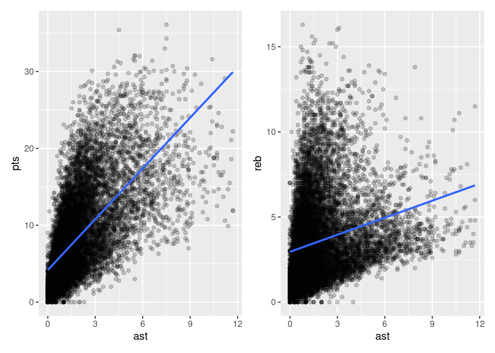

This chapter makes use of the broom package, part of the tidyverse-adjacent family of packages, tidymodels. It can be installed and loaded in the same way that we have installed/loaded other packages (see Section 1.5 for a refresher).
In Chapter 14, we introduced ideas related to modeling, relating outcome variable, \(y\), and some explanatory variable, \(x\). Though there are many approaches to modeling, we focused on one particular technique: linear regression, one of the most commonly used and easy-to-understand approaches to statistical modeling. Furthermore to keep things simple, we only considered models with one explanatory variable, \(x\), that was either metric (Section 14.1) or (Section 14.2).
In this chapter on multiple regression, we’ll start considering models that include more than one explanatory variable. You can imagine when trying to model a particular outcome variable, like points per game, that it would be useful to include more than just one explanatory variable’s-worth of information.
Since our regression models will now consider more than one explanatory variable, the interpretation of the associated effect of any one explanatory variable must be made in conjunction with the other explanatory variables included in your model. Let’s begin!
16.1 Two metric explanatory variables
Let’s consider multiple regression models where we have two metric explanatory variables. As usual, we’ll use the \(nba\) data set. As before, we’ll use the average assists per game (ast) as one explanatory variable. As a second explanatory variable, we will use each player’s average number of rebounds per game (`reb``).
In this section, we’ll fit a regression model where we have
A metric outcome variable \(y\), the player’s average points per game
Two explanatory variables:
One metric explanatory variable \(x_1\), the player’s average assists per game
Another numerical explanatory variable \(x_2\), the player’s average rebounds per game
16.1.1 Exploratory data analysis
Let’s load our data as usual.
nba <-read_csv("./data/nba_all_seasons.csv", na =c("Undrafted"))
New names:
Rows: 12305 Columns: 22
── Column specification
──────────────────────────────────────────────────────── Delimiter: "," chr
(5): player_name, team_abbreviation, college, country, season dbl (17): ...1,
age, player_height, player_weight, draft_year, draft_round, ...
ℹ Use `spec()` to retrieve the full column specification for this data. ℹ
Specify the column types or set `show_col_types = FALSE` to quiet this message.
• `` -> `...1`
Furthermore, let’s look at a random sample of 10 rows of our data, inspecting the relevant columns.
nba %>%sample_n(size =10) %>%select(c(pts, ast, reb))
As always, we should begin by conducting an exploratory data analysis. Review Chapter 9 if you need to do so.
Because our outcome variable pts and the explanatory variables ast and reb are numerical, we can compute the correlation coefficients between the different possible pairs of these variables. Let’s do so.
Or we can simultaneously compute them by returning a correlation matrix. We can then see the correlation coefficient for any pair of variables by looking them up in the appropriate row/column combination.
Let’s visualize the relationship of the outcome variable with each of the two explanatory variables in two separate plots in Figure 16.1.
plt1 <-ggplot(nba, aes(x = ast, y = pts)) +geom_point(alpha=.2) +geom_smooth(method ="lm", se =FALSE)plt2 <-ggplot(nba, aes(x = ast, y = reb)) +geom_point(alpha=.2) +geom_smooth(method ="lm", se =FALSE)plt1 + plt2
`geom_smooth()` using formula = 'y ~ x'
`geom_smooth()` using formula = 'y ~ x'

Figure 16.1: ?(caption)
Observe there is a positive relationship between pts and ast: as the average number of assists per game increases, so also does the average number of points scored per game. This is consistent with the strongly positive correlation coefficient we calculated earlier. Similarly, there is a positive relationship between pts and reb: as the average number of rebounds per game increases, so also does the average number of points scored per game.
However, the two plots in Figure 16.1 only focus on the relationship of the outcome variable with each of the two explanatory variables separately (the bivariate relationships). To visualize the relationship among all three variables simultaneously, we need a three-dimensional (3D) scatterplot of the sort presented in in Figure 16.2.
Figure 16.2: 3D scatterplot and regression plane
Furthermore, we also include the regression plane. Recall that regression lines are “best-fitting” in that, of all possible lines we can draw through a cloud of points, the regression line minimizes the sum of squared residuals. This concept also extends to models with more than one metric explanatory variable. The difference is instead of a “best-fitting” line, we now have a “best-fitting” plane that similarly minimizes the sum of squared residuals.
Important
The three-dimensional plot here is for illustration purposes only. It is intended to provide an accessible way to understand how regression generalizes from a single explanatory variable to two explanatory variables. But once you add a third explanatory variable into the mix, you can no longer plot things like we have here (you would need a fourth spatial dimension). Furthermore, three-dimensional plots are never appropriate (I promise). So hopefully this will be the last time we look at something like this!
16.1.2 Regression plane
Let’s now fit a regression model and get the regression table. Just as we did in Chapter 14, the regression table for this model can be generated using summary().
# Fit regression model:pts_model <-lm(pts ~ ast + reb, data = nba)# Get regression table:summary(pts_model)
Call:
lm(formula = pts ~ ast + reb, data = nba)
Residuals:
Min 1Q Median 3Q Max
-19.7068 -1.8344 -0.4613 1.4975 20.3105
Coefficients:
Estimate Std. Error t value Pr(>|t|)
(Intercept) 0.66714 0.05836 11.43 <2e-16 ***
ast 1.80437 0.01785 101.07 <2e-16 ***
reb 1.18920 0.01290 92.21 <2e-16 ***
---
Signif. codes: 0 '***' 0.001 '**' 0.01 '*' 0.05 '.' 0.1 ' ' 1
Residual standard error: 3.448 on 12302 degrees of freedom
Multiple R-squared: 0.667, Adjusted R-squared: 0.6669
F-statistic: 1.232e+04 on 2 and 12302 DF, p-value: < 2.2e-16
We first “fit” the linear regression model using the lm(y ~ x1 + x2, data) function and save it in pts_model.
We get the regression table by applying the summary() function to pts_model.
Let’s interpret the three values in the Estimate column. First, the estimate in the (Intercept) row is 0.66714. This intercept represents the value of pts expected for a player with ast=0 and reb=0. Second, the estimate in the ast row is 1.80437. Taking into account all the other explanatory variables in our model, for every additional assist per game, we expect an additional 1.8 points per game.
Note that we preface our interpretation with the statement, “taking into account all the other explanatory variables in our model”. Here, by all other explanatory variables we mean the intercept and reb. We do this to emphasize that we are now jointly interpreting the associated effect of multiple explanatory variables in the same model at the same time and we cannot forget about the other explanatory variables as we interpret one particular parameter.
Third, the estimate in the reb row is 1.18920. Taking into account all other explanatory variables in our model, for every additional rebound per game, we expect an additional 1.19 points per game.
Putting these results together, the equation of the regression plane that gives us fitted values \(\widehat{y}\) = \(\widehat{pts}\) is:
Let’s also compute all fitted values and residuals for our regression model and present the first 10 rows of output. Thinking about the 3D scatterplot in Figure 16.2, the coordinates of each point in the scatterplot is a triplet of pts, ast, and reb from our data. The fitted values that lie on the regression plan can be found using the equation above.
Generate \(N=200\) random values drawn from a normal distribution with a mean of \(50\) and a standard deviation of \(5\). Save these values to a variable named x1.
Generate \(N\) new values such that each value is one of the values in x1 and a new draw from a normal distribution with a mean of \(0.0\) and a standard deviation of \(0.1\). Save these values to a variable named x1.
Generate \(N\) new values such that each value is one of the values in x1 and a new draw from a normal distribution with a mean of \(0.0\) and a standard deviation of \(1.0\). Save these values to a variable named y.
Construct a multiple regression model with an intercept and 2 explanatory variables: x1 and x2.
What has happened here? Can you perform some explanatory data analysis to help figure this out?
Now increase \(N\) to \(N=10,000\) and perform all the steps above again. What has happened now?